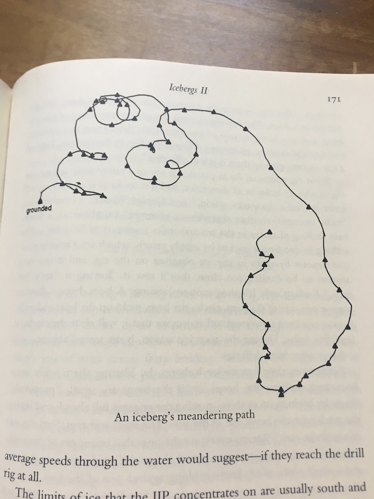
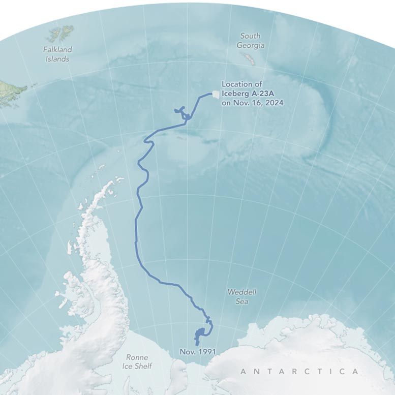
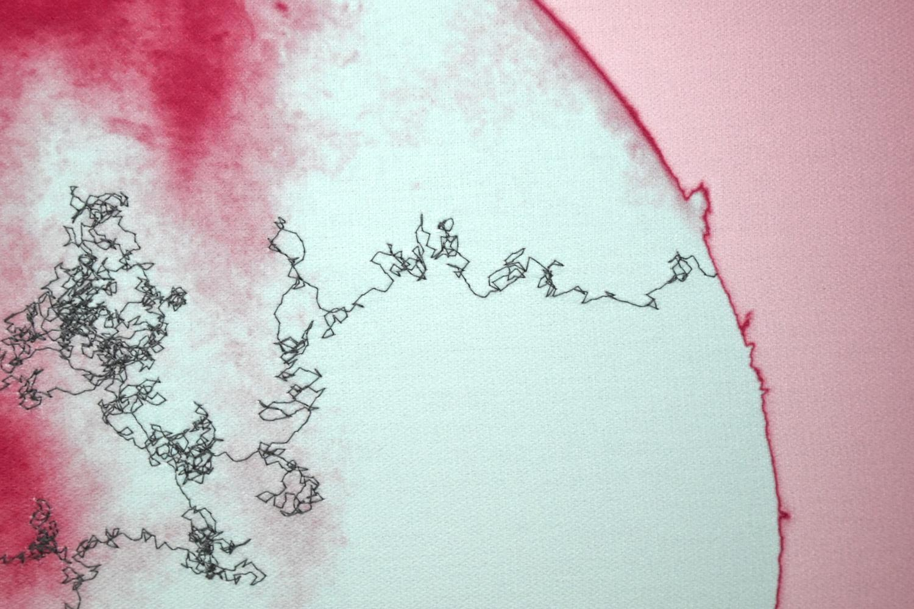
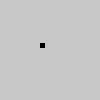
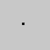
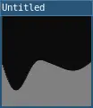
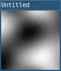

Date: 2026-08-31

Image uploaded to Are.na by Jon-Kyle MohrThere are full step-by-step download instructions for Mac, Win, Linux
sketch--this is a comment
function setup()
size(500,500)
end
function draw()
--main loop
--each run of draw is a frame
endLua is a dynamically typed language. Variables themselves don’t have types. Instead, the values themselves do.
By default, variables are global-scoped, unless set to be
local.
require('L5')
function setup()
x = 0
local y = 0
end
function draw()
print(x) -- prints 0
print(y) -- nil
endWe covered setup and draw. There are also additional event functions:
function setup()
--load media here
img = loadImage('assets/quality_meme.jpg')
endReference example - loading an image
ellipse(mouseX,mouseY,20)Keypresses, mouse movement and clicks are examples of input and interaction
Similar to Processing/Java
for i = 1,10 do
print(i) -- will print 1, 2, 3...to 10 on separate lines
endYou can optionally add an increment value
for bottle = 99,1,-1 do
print(bottle..'bottles of NA beverages on the wall..')
endThe main data structure in Lua is the table, which is used to create all other needed formats.
For example…
Arrays can be described literally. They start with 1.
The length of an array is returned through adding a
# before the array name.
array = {'first','second','last'}
print(array[1]) -- 'first'
print(#array) -- 3local numArray = {1, 2, 3}
table.insert(numArray, 4}
table.insert(numArray, 5}
--will result in [1, 2, 3, 4, 5]--continuing from above
table.remove(numArray) --will remove from end
--will result [1, 2, 3, 4]Lua has the utilities pairs and
ipairs. We can optionally use
ipairs when looping through an array.
Without ipairs:
for i=1,#students do
print(students[i])
endWith ipairs:
for student in ipairs(students) do
print(student)
endError messages and print messages are printed in the command line.
They can also be presented onscreen through use of the
printToScreen() function added in your
setup.
Satellite video of world’s biggest iceberg, A23a, breaking free
from NPR

When icebergs break away from ice shelves or large glacier fronts, they become travelers in the ocean, carried by currents, spinning in eddies, shifting with the tides, and pushed along by the wind. Sometimes, these massive ice chunks get stuck — either grounded on a shallow seafloor or caught in a swirling mass of water. Iceberg A-23A experienced both. While every iceberg’s journey is unique, most follow the same general path. More than 90 percent of bergs around Antarctica enter the clockwise-flowing current of the Weddell Gyre off East Antarctica and eventually escape, shooting north along the Antarctic Peninsula and finally out across the Drake Passage into warmer South Atlantic waters—an ocean route known as “iceberg alley.” –How the World’s Largest Iceberg Escaped an Ocean Whirlpool, from SciTechDaily
Heliographs by Evan Roth

Image from Dorothée Nilsson GalleryDuring a residency at the Astronomical Observatory of the University of Namur, Belgium, Roth worked with astronomers imaging the surface of the Sun through a telescope fitted with an infrared camera, a lens that registers wavelengths beyond human vision, revealing what remains otherwise invisible to the naked eye. The camera produces greyscale images, which Roth then colourises intuitively, treating colour as a painterly choice. The result is a hybrid: photograph, quilt, astronomical data, and painting at once. These solar photographs are digitally printed onto fabric and stitched with a sewing machine following a pattern known as a random walk: a phenomenon in astrophysics in which a photon born in the Sun’s core takes, on average, one hundred thousand years to reach its surface, drifting through solar plasma in a slow, unpredictable arc, before crossing the distance to Earth in 8 minutes and 20 seconds. For Roth, it is both concept and method: a way of reanimating the photon’s journey in thread, and of enacting the wandering, drifting attention that slow transformation requires. Exhibition Text: Evan Roth
Returns random numbers that can be tuned to feel organic.
Values returned by random() and randomGaussian() can change by large amounts between function calls. By contrast, values returned by noise() can be made “smooth”. Calls to noise() with similar inputs will produce similar outputs. noise() is used to create textures, motion, shapes, terrains, and so on. Ken Perlin invented noise() while animating the original Tron film in the 1980s. The version of noise in L5 varies from p5.js and Processing. It returns simplex noise for 1 and 2 input arguments. Simplex noise is an algorithm designed in 2001 by Ken Perlin to address limitations in his classic noise function, notably relating to speed, complexity and higher order dimensions. noise() always returns values between 0 and 1. It returns the same value for a given input while a sketch is running. noise() produces different results each time a sketch runs. The character of the noise can be adjusted by scaling the inputs. noise() interprets inputs as coordinates. The sequence of noise values will be smoother when the input coordinates are closer. The version of noise() with one parameter computes noise values in one dimension. This dimension can be thought of as space, as in noise(x), or time, as in noise(t). The version of noise() with two parameters computes noise values in two dimensions. These dimensions can be thought of as space, as in noise(x, y), or space and time, as in noise(x, t).
Important: The output of noise() might be constant if only using integers as arguments. Be sure to use floats to get varying return values.
from noise in the L5 reference

require("L5")
function setup()
size(100, 100)
describe('A black dot moves randomly on a gray square.')
end
function draw()
background(200)
-- Calculate the coordinates.
local x = 100 * noise(0.005 * frameCount)
local y = 100 * noise(0.005 * frameCount + 10000)
-- Draw the point.
strokeWeight(5)
point(x, y)
end
require("L5")
function setup()
size(100, 100)
describe('A black dot moves randomly on a gray square.')
end
function draw()
background(200)
-- Set the noise level and scale.
local noiseLevel = 100
local noiseScale = 0.005
-- Scale the input coordinate.
local nt = noiseScale * frameCount
-- Compute the noise values.
local x = noiseLevel * noise(nt)
local y = noiseLevel * noise(nt + 10000);
-- Draw the point.
strokeWeight(5)
point(x, y)
end
require("L5")
function setup()
size(100, 100)
describe('A hilly terrain drawn in gray against a black sky.')
end
function draw()
-- Set the noise level and scale.
local noiseLevel = 100
local noiseScale = 0.02
-- Scale the input coordinate.
local x = frameCount
local nx = noiseScale * x
-- Compute the noise value.
local y = noiseLevel * noise(nx)
-- Draw the line.
line(x, 0, x, y)
endrequire("L5")
function setup()
size(100, 100)
describe('A calm sea drawn in gray against a black sky.')
end
function draw()
background(200)
-- Set the noise level and scale.
local noiseLevel = 100;
local noiseScale = 0.002
-- Iterate from left to right.
for x = 1,width do
-- Scale the input coordinates.
local nx = noiseScale * x
local nt = noiseScale * frameCount
-- Compute the noise value.
local y = noiseLevel * noise(nx, nt)
-- Draw the line.
line(x, 0, x, y)
end
end
require("L5")
function setup()
size(100, 100)
background(200)
-- Set the noise level and scale.
local noiseLevel = 255
local noiseScale = 0.01
-- Iterate from top to bottom.
for y=1,height do
-- Iterate from left to right.
for x = 0,width do
-- Scale the input coordinates.
local nx = noiseScale * x
local ny = noiseScale * y
-- Compute the noise value.
local c = noiseLevel * noise(nx, ny)
-- Draw the point.
stroke(c)
point(x, y)
end
end
describe('A gray cloudy pattern.')
endrequire("L5")
function setup()
size(100, 100)
describe('A gray cloudy pattern that changes.')
end
function draw()
-- Set the noise level and scale.
local noiseLevel = 255
local noiseScale = 0.009
-- Iterate from top to bottom.
for y=1,height do
-- Iterate from left to right.
for x=1,width do
-- Scale the input coordinates.
local nx = noiseScale * x
local ny = noiseScale * y
local nt = noiseScale * frameCount
-- Compute the noise value.
local c = noiseLevel * noise(nx, ny, nt)
-- Draw the point.
stroke(c)
point(x, y)
end
end
endHow to Code Procedural Terrain with Perlin Noise (JavaScript & p5.js) with RachelfTech
Perlin Noise in p5.js with The Coding Train
There are a few approaches. Pick one, blend a few, or invent your own:
Parameters:
Uses at least one of: random walk, Perlin noise, or both together.
noLoop() (if it runs forever,
explain the concept).Flow-field and particle-system techniques are widely documented in creative-coding tutorials; you’re welcome to learn from them, but your submitted piece should be your own composition and combination of ideas, not a recreation of a tutorial’s exact result